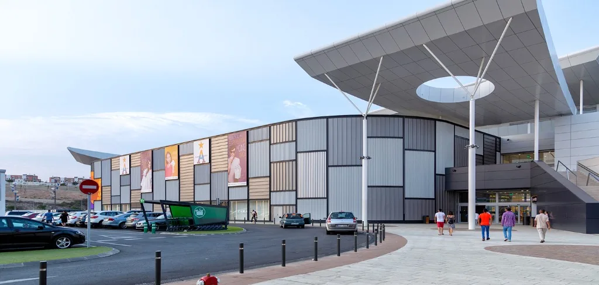

Caso de éxito
Centro Comercial Torrecárdenas
Más de 11.000 m² de pavimentación exterior en Almería
PAVIMENTCIVIL ejecutó para Ferrovial Construcciones S.A. la pavimentación exterior del Centro Comercial Torrecárdenas, mediante adoquines de hormigón multiformato y pavimentos prefabricados preparados para un uso intensivo.

Ficha técnica del proyecto
- Cliente
- Ferrovial Construcciones S.A.
- Ubicación
- Almería, Andalucía
- Tipo de proyecto
- Centro comercial
- Superficie ejecutada
- Más de 11.000 m²
- Duración
- 3 meses
- Periodo
- Agosto – octubre de 2017
- Equipo
- 7 operarios
- Maquinaria
- Manipulador telescópico Manitou
- Estado
- Finalizado
Pavimentación exterior para una gran superficie comercial
La construcción del Centro Comercial Torrecárdenas requería una actuación exterior de gran escala, capaz de responder a un elevado tránsito peatonal y a zonas compatibles con circulación rodada. PAVIMENTCIVIL asumió la ejecución de más de 11.000 m² de pavimentación exterior para Ferrovial Construcciones S.A.
La intervención incluyó adoquines de hormigón multiformato, baldosas prefabricadas de 60 × 40 cm, acerados y remates vinculados a la urbanización exterior del conjunto comercial. Cada zona exigía adaptar niveles, pendientes y transiciones entre materiales distintos, manteniendo la continuidad visual del conjunto.
Las distintas tipologías de solución respondían a las condiciones de cada sector del proyecto, desde accesos principales hasta zonas de circulación secundaria. La actuación se desarrolló entre agosto y octubre de 2017, en un plazo de tres meses, con un equipo de siete operarios.
La coordinación con la dirección de obra fue continua para encajar las fases de pavimentación en el calendario general del centro comercial, sin interferir con otros gremios ni retrasar la apertura prevista. El resultado fue un pavimento exterior resistente al uso intensivo, con acabados integrados en la arquitectura del recinto.
Consulta también nuestros servicios de pavimentación y la página de empresa.
El reto de la obra
El proyecto requería una empresa especializada capaz de ejecutar una superficie de gran escala dentro de un calendario exigente, resolviendo pendientes complejas y manteniendo la continuidad técnica y visual del pavimento.
Se trataba de más de 11.000 m² con zonas de pendiente variable, donde el pavimento debía responder simultáneamente al tránsito peatonal y a áreas de circulación rodada. El calendario de ejecución estaba condicionado por la apertura del centro comercial y la coordinación con el resto de equipos en obra.
- Gran superficie de actuación Más de 11.000 m² repartidos en distintas zonas del conjunto comercial.
- Pendientes complejas Niveles y desniveles que exigían replanteo y compactación específicos.
- Coordinación con otros equipos Ejecución por fases alineada con el calendario general de obra.
- Uso peatonal y rodado Soluciones adaptadas a las condiciones de tránsito de cada sector.
Nuestra solución
La ejecución comenzó con la preparación de las zonas de trabajo y la compactación adaptada a las condiciones del terreno. Se replantearon niveles y pendientes antes de iniciar la colocación de adoquines multiformato y baldosas prefabricadas de hormigón.
El trabajo se organizó por fases, con coordinación continua con la dirección de obra. Se controlaron los remates en accesos, transiciones entre materiales y zonas de tránsito, ajustando la ejecución a las condiciones reales de cada sector del proyecto.
Servicios y materiales
Servicios ejecutados
- Colocación de adoquines
- Pavimentación exterior
- Acerados
- Urbanización exterior
- Obra civil vinculada al pavimento
- Ajustes y reparaciones durante la ejecución
Partidas relacionadas: Colocación de adoquines · Pavimentación
Materiales empleados
- Adoquín bicapa de hormigón multiformato
- Baldosa prefabricada de hormigón 60 × 40 × 8 cm
- Gravín
- Arena de asiento
- Más de 11.000 m² Superficie ejecutada
- 3 meses Duración de la obra
- 7 operarios Equipo de ejecución
- 2017 Año del proyecto
Galería del proyecto
De la preparación al resultado final
-
1. Preparación y replanteo
Compactación, comprobación de niveles y organización de las fases de trabajo.
-
2. Ejecución
Colocación de adoquines multiformato, baldosas prefabricadas y remates de las distintas zonas.
-
3. Entrega
Revisión de pendientes, continuidad del pavimento y entrega conforme al calendario previsto.
Resultado de la intervención
La actuación permitió entregar más de 11.000 m² de pavimentación exterior resistente y adaptada a las necesidades de una gran superficie comercial. El sistema ejecutado mejoró el drenaje superficial, redujo las necesidades de mantenimiento y proporcionó un acabado coherente con la arquitectura del centro.
- Durabilidad frente al uso intensivo
- Mejor evacuación superficial del agua
- Menor mantenimiento
- Continuidad visual entre zonas
- Cumplimiento de los plazos de ejecución
Valoración del proyecto
Resultado valorado por el cliente
El cliente valoró positivamente la implicación del equipo, el cumplimiento del calendario y la calidad del resultado final.
Por qué este proyecto es representativo
Centro Comercial Torrecárdenas es uno de los proyectos más representativos de PAVIMENTCIVIL por la superficie ejecutada, la exigencia del calendario y la diversidad de soluciones de pavimentación exterior desarrolladas. La actuación demuestra la capacidad del equipo para coordinar y ejecutar obras de gran escala manteniendo el control técnico de cada fase.
Explora más casos en la página de proyectos o consulta el formulario de contacto.
Preguntas sobre el proyecto
¿Qué trabajos realizó PAVIMENTCIVIL en el Centro Comercial Torrecárdenas?
Colocación de adoquines, pavimentación exterior, acerados, urbanización exterior, obra civil vinculada al pavimento y ajustes durante la ejecución.
¿Qué superficie de pavimentación se ejecutó?
Se ejecutaron más de 11.000 m² de colocación de adoquines y pavimentación exterior.
¿Qué materiales se utilizaron?
Adoquín bicapa de hormigón multiformato, baldosa prefabricada de 60 × 40 × 8 cm, gravín y arena de asiento.
¿Cómo se resolvieron las zonas con pendientes?
Mediante preparación y compactación específica del terreno, replanteo de niveles y colocación de adoquines multiformato adaptada a cada pendiente.
¿PAVIMENTCIVIL ejecuta proyectos similares fuera de Murcia?
Sí. Este proyecto se ejecutó en Almería y la empresa actúa en distintas provincias según el alcance y calendario de la obra.
¿Necesitas ejecutar un proyecto de pavimentación de gran superficie?
Cuéntanos la ubicación, el alcance y las principales necesidades de la obra. Estudiaremos el proyecto y prepararemos una valoración adaptada.